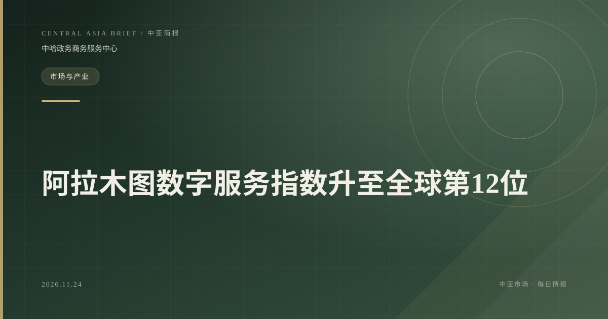

阿拉木图数字服务指数两年跃升15位，与伦敦、东京并列；哈国禽肉自给率升至78%，铀战略储备与2GW新能源项目同步推进。

今日要点
数字服务与产业升级
阿拉木图在联合国城市数字服务发展排名中位列第12位，与伦敦、东京、哥本哈根和上海并列，指数得分为0.9604分（满分1分），两年内上升15位 [4]。这一排名反映城市在线服务供给能力的提升，对计划落地阿拉木图的数字服务、政务科技类企业构成可参考的区位信号。
产业侧，哈国农业部披露过去五年禽肉自给率由58%提升至78% [22]，进口替代在食品加工环节持续推进，但饲料、种禽等上游环节的本地化程度材料未予说明。
价格与需求背离
哈萨克斯坦国家银行2026年三季度企业调查显示，企业在需求走弱背景下仍继续上调出厂价格，76.5%的企业将原料和材料成本列为定价主要依据，66.6%的企业同时考虑税费因素 [16]。成本推动型涨价与需求疲软并存，意味着下游议价空间收窄，采购与库存策略需重新测算。
铀储备与能源项目
总统托卡耶夫要求建立面向原子能行业的铀战略储备，原子能署表示开采企业将通过相应合同向国家储备供铀，且储备不限于实物铀，而是覆盖从地下储量到全链条的安排 [17]。具体规模、合同条款与时间表材料未披露。
油气方面，总统会见哈国家石油天然气公司（KazMunayGas）董事会主席哈谢诺夫，听取新油田、天然气项目和炼厂相关汇报 [29][32][33]，会议具体结论与投资数字未在材料中给出。新能源领域，哈国2GW风光储矩阵项目提速 [36]，项目清单与并网安排材料未详。
经济外交与数字 economy
外交部长特列乌别尔季在阿斯塔纳国际金融中心外交日活动上表示，投资已不再只是资本流动，哈国正把经济外交转为吸引外资、技术和产业伙伴关系的更直接工具 [26]。总统府另发布关于发展「人民数字 economy」、扩大公民与企业经济机会的措施文件 [30]，具体条款以官方文本为准。
对企业意味着什么
- 判断：阿拉木图数字服务排名上升，可作为数字政务、在线服务类企业选择落地城市的加分项，但需自行核验当地许可与数据合规要求。
- 判断：成本推动型提价叠加需求走弱，进入哈国制造业与加工业的中企应把原料价格联动条款写入采购与销售合同。
- 判断：铀战略储备以新合同方式向开采企业采购，关注后续招标与合同细则，合规与税务安排以哈国官方最新规定及专业顾问意见为准。
- 判断：禽肉自给率提升显示食品进口替代空间收窄，相关企业宜转向上游饲料、种禽与加工设备环节。
信息来源
- [4] Kursiv — Алматы догнал Лондон и Токио в рейтинге цифровых услуг ООН · 2026.11.24
- [16] Kursiv — Цены растут, несмотря на снижение спроса в Казахстане – исследование Нацбанка · 2026.11.24
- [17] Kursiv — Как Казахстан создаст запас урана, равный семи годам добычи «Казатомпрома» · 2026.11.24
- [22] 哈通社 — 农业部：过去五年哈萨克斯坦禽肉自给率由58%大幅提升至78% · 2026.11.24
- [26] The Astana Times — Kazakhstan Strengthens Economic Diplomacy to Attract Foreign Investment · 2026.11.23
- [29] Tengrinews · English — New fields, gas projects and refineries: Tokayev met with the head of KazMunayGas · 2026.11.23
- [30] Akorda — О мерах по развитию народной цифровой экономики и расширению экономических возможностей граждан и бизнеса · 2026.11.23
- [32] Tengrinews — Новые месторождения, газовые проекты и НПЗ: Токаев принял главу “КазМунайГаза“ · 2026.11.23
- [33] Akorda — Президент принял председателя правления АО НК «КазМунайГаз» Асхата Хасенова · 2026.11.23
- [36] 见道网 — 哈萨克斯坦新能源项目提速，2GW风光储矩阵成型 · 2026.11.23
本文由中哈政务商务服务中心编辑部基于公开来源整理，引用编号对应文末信息来源；仅作一般性信息参考，不构成法律、税务或投资建议。 涉及具体政策、费率与许可要求，请以哈萨克斯坦官方最新规定及持牌专业机构意见为准。